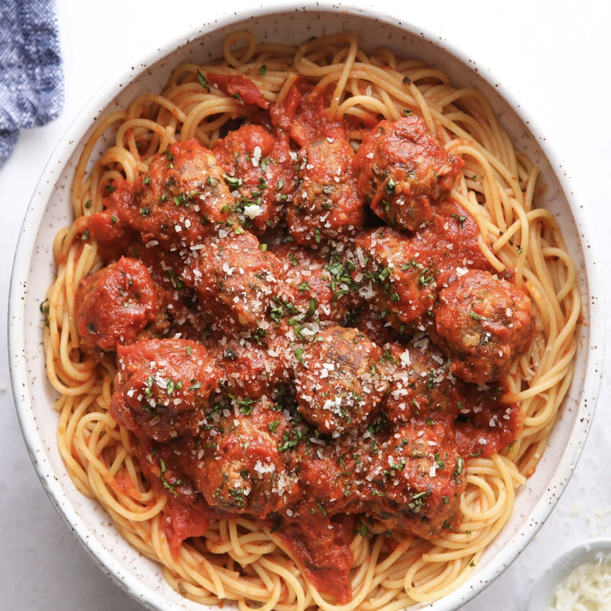
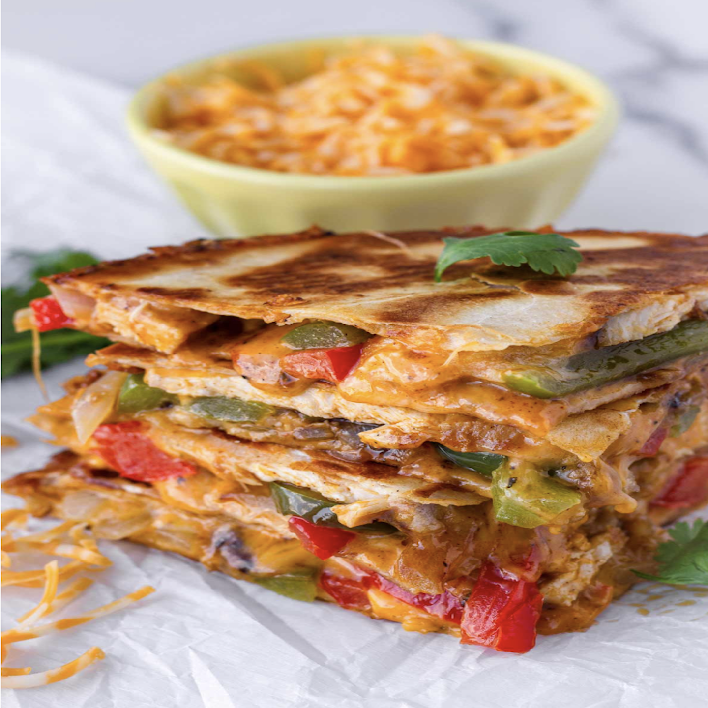
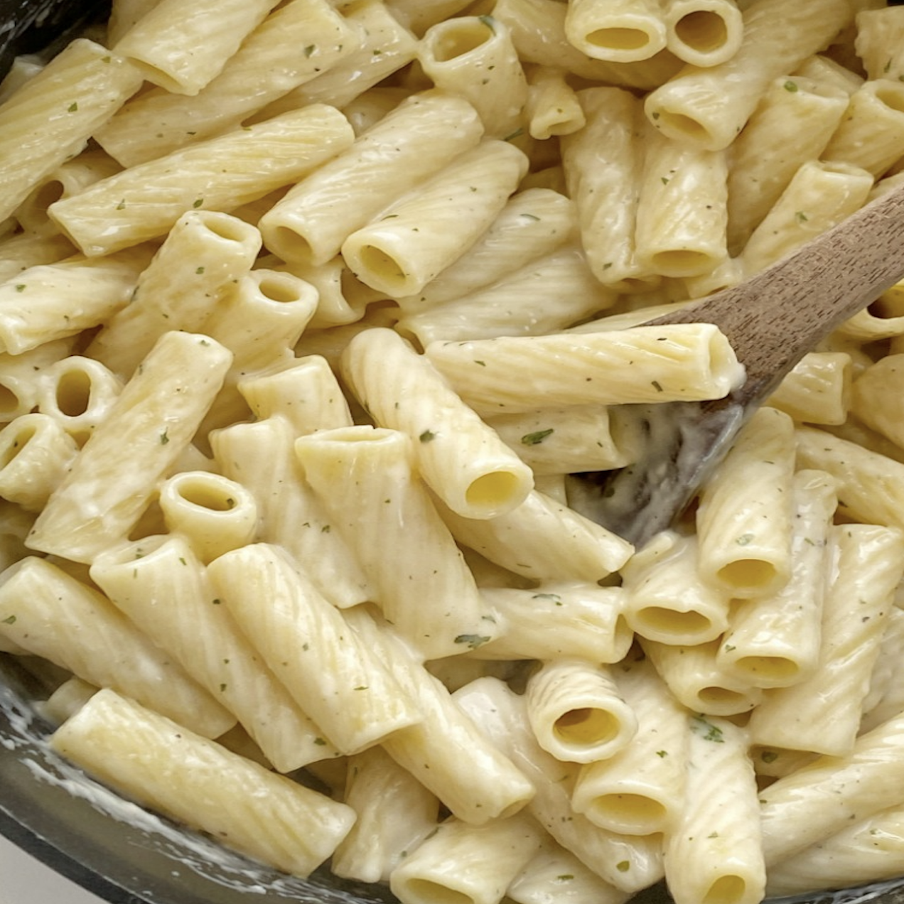

The Warm
Plate
FAMILY-FRIENDLY RECIPES
Looking to whip up something that even picky kiddos will love? Check out my recent family-friendly recipe finds below!
CLASSIC SPAGHETTI
This classic spaghetti recipe will satisfy even the pickiest of eaters! The homemade marinara sauce combined with the juicy meatballs are sure to be a hit in any kitchen!
Recipe!SAVORY CHICKEN QUESADILLAS
These quesadillas are a fun and delicious meal that the whole family will love! With a perfect blend of melted cheese and your choice of tasty fillings, they're quick, customizable, and sure to please even the pickiest eaters. Perfect for any night of the week!
Recipe!GARLIC PARMESAN PASTA
For mac and cheese lovers looking for an upgrade, this garlic parmesan pasta is the perfect dish! With rich, buttery garlic sauce and a generous sprinkle of parmesan, it’s a simple yet flavorful twist on your favorite comfort food that will leave you craving more.
Recipe!